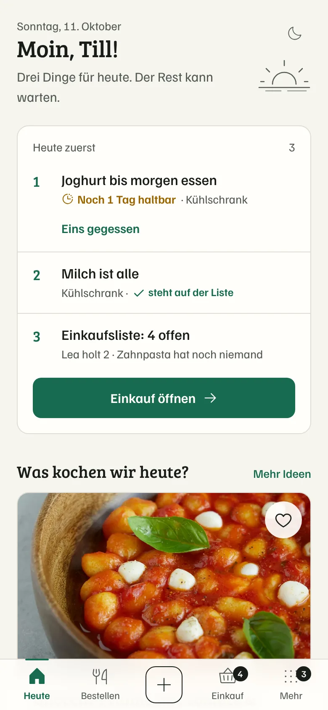
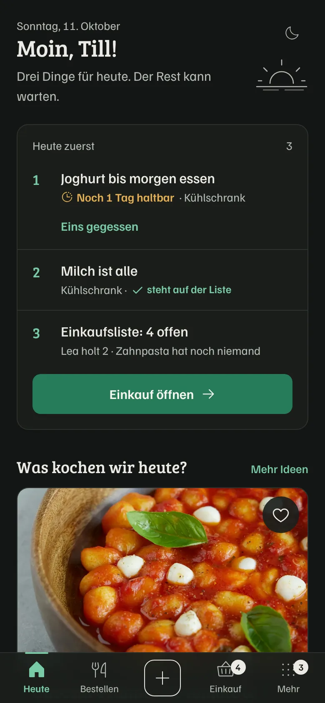
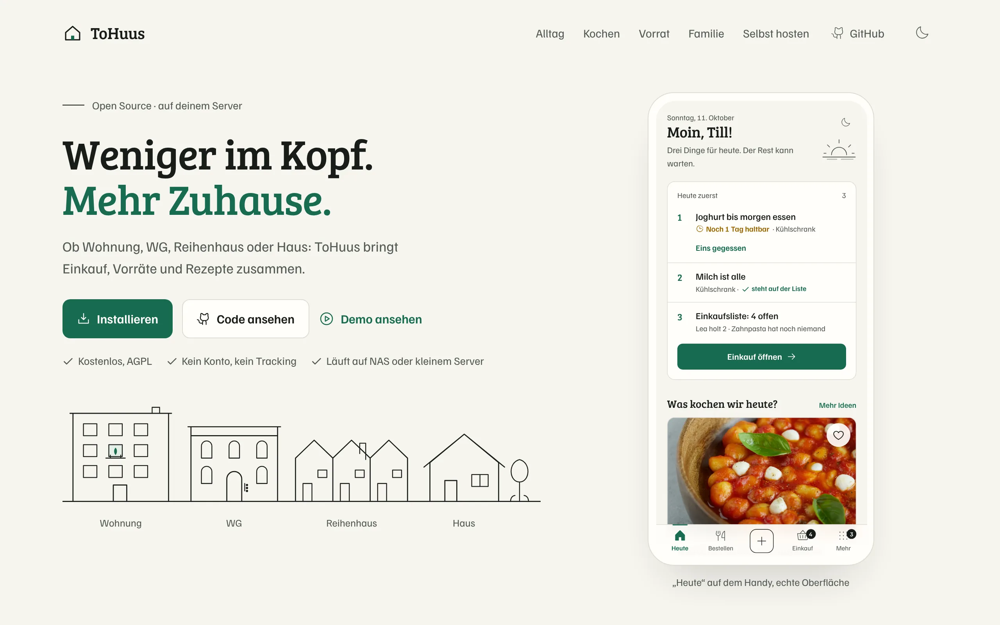
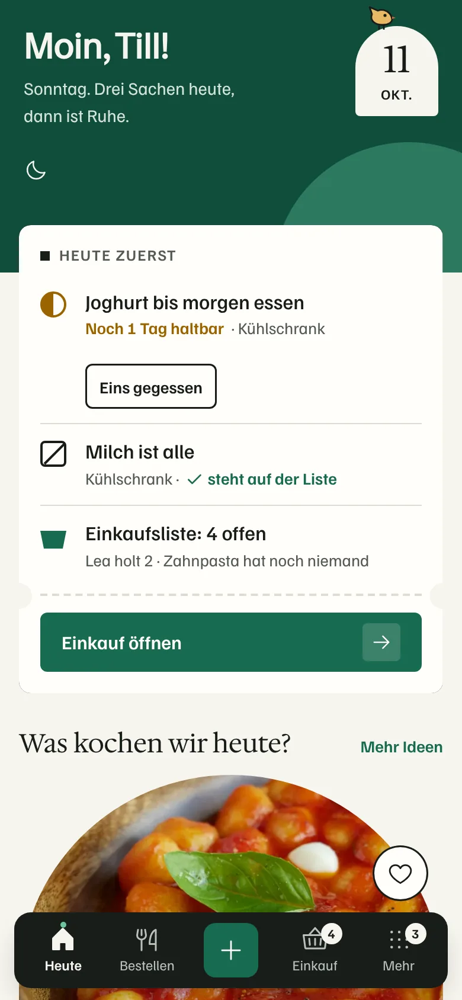
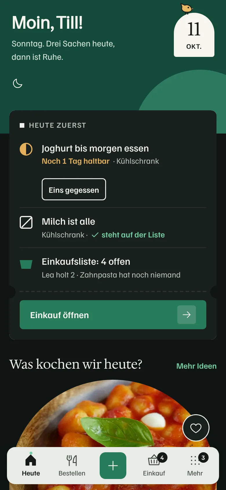
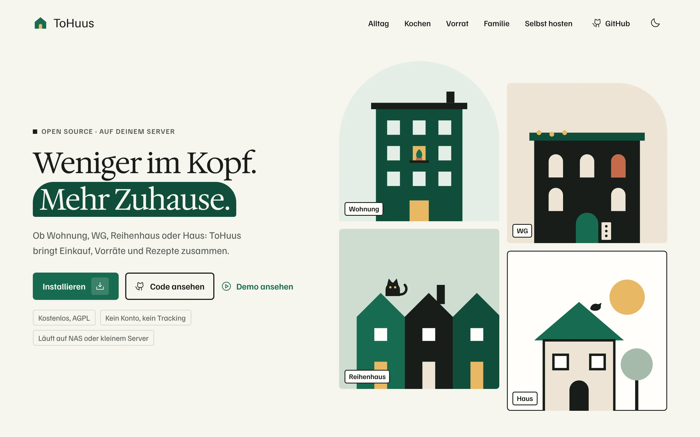

Variante A
Nordic Editorial
Ruhig und redaktionell. Haarlinien statt Kartenstapel, nummerierte Prioritäten, eine einzige grüne Handlung pro Screen. Illustration nur als feine Linie.



Variante B
Little House
Illustrativ und warm. Gezeichnete Federlinien mit Gouache-Flächen, Papierkorn, weiche Karten. Katze, Vogel und Topfpflanze als seltene Entdeckungen.


Variante C
Dutch Detail
Grafisch mutig. Flächen, Bögen, Kreise; Ticket- und Kassenbon-Formen, Stempel, schwarze Navigationsleiste. Kleine Details wie der Vogel auf dem Datum.


